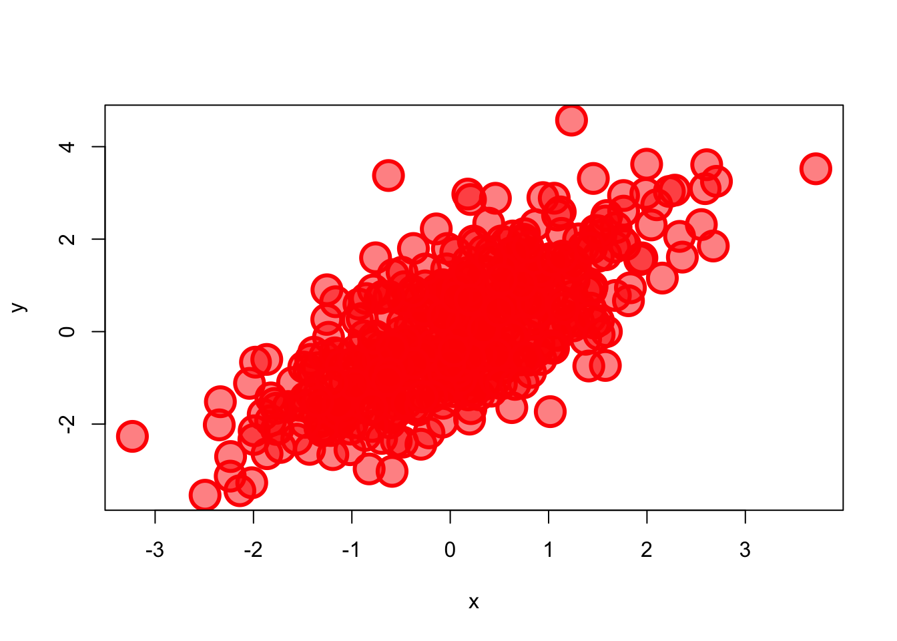
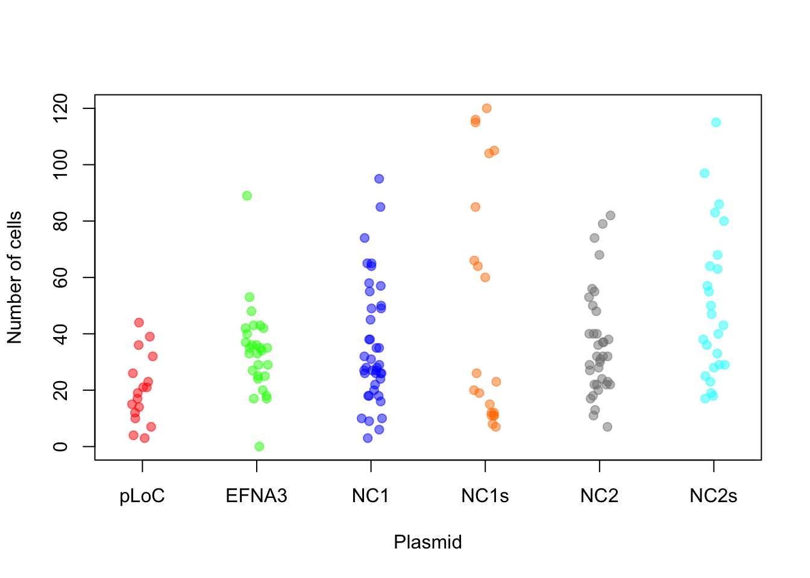
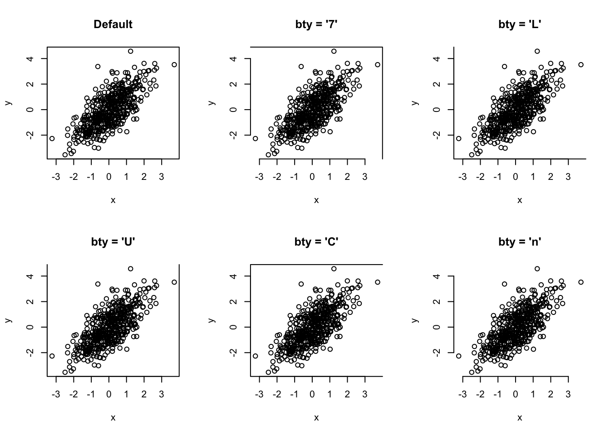
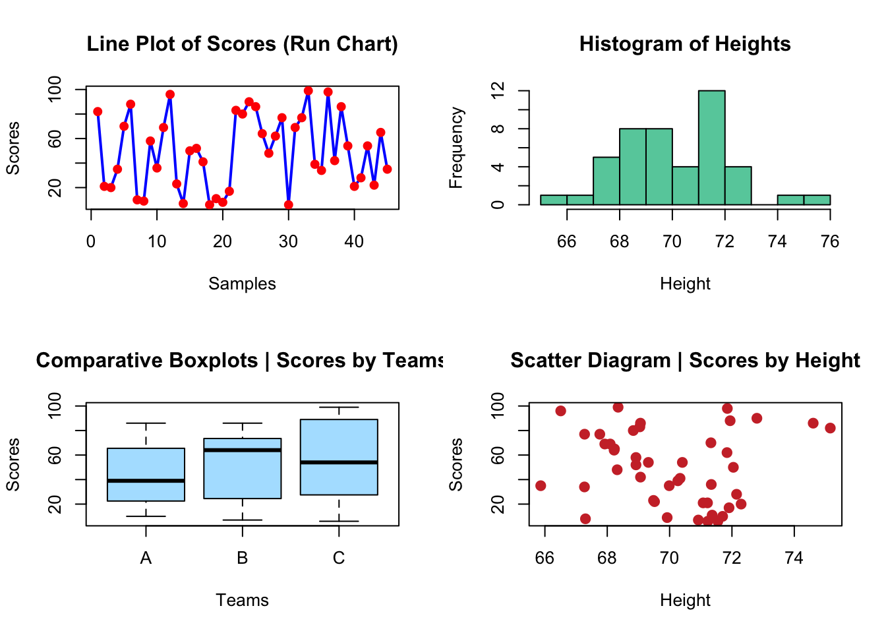

# generate some sample data with normal distribution
x <- rnorm(500)
y <- x + rnorm(500)
plot(x)hist(x, col = "blue")plot(x, y)
plot(dnorm(0:100, mean = 50, sd = 5))Data visualization is a very important part of a data analysis because they can efficiently summarize large amounts of data in a graphical format and reveal new insights that are difficult to understand from the raw data. From a researcher’s or data analyst’s perspective, plotting datasets also helps you become familiar with the data and plan next steps in your analysis. It also allows you to identify statistical pitfalls with an initial plot.
The above Figure is a well-known quartet highlights the importance of graphing data prior to analysis, and why statistical reviewers often ask for such graphs to be made available. As you can see the Pearson r2 is very similar, but the data are actually very different. Check out also the Dinosaurus example in the reference 2 below.
There are many different types of graphs, each with their own strengths and use cases. One of the trickiest parts of the analysis process is choosing the right way to represent your data with one of these visualizations. The wrong chart can lead to confusion or misinterpretation of the data (see some examples of bad charts here).
From a classical data analysis perspective, the first consideration in choosing the right plot is the nature of your variables. Some charts are recommended for numerical data (quantitative variables) and others for categorical data (qualitative variables). Then you should consider what role you want your data visualization to play, i.e., what question you want to answer or what message you want to convey. This depends on the number of variables as well as their distribution, grouping or correlation. There are some best practice guidelines, but ultimately you need to consider what is best for your data. What do you want to show? What chart best conveys your message? Is it a comparison between groups? Is it a frequency distribution of 1 variable?

For a guidance, you can use the Chartchooser above, by Andrew Abela, or the interactive website Visual Vocabulary here.
You can see a description of some of the most common plot types, with many examples on books and dedicated R websites. I suggest to take a look to some of the suggested References below, or some quick examples, like those here or here. Rather than going through a wide list of plots, we are going to use some examples to learn some basic plotting and see the effect of plot selection in order to understand your data and use them to answer questions.
R has a number of built-in tools for diverse graph types such as histograms, scatterplots, stripcharts, bar charts, boxplots, and more. Indeed, there are many functions in R to produce plots ranging from the very basic to the highly complex. We will show a few examples and use the plots as an excuse to add some new tricks for data analysis.
In Lesson R8 we will use the ggplot2 package for efficient and advanced plot generation and customization. However, you will see that it’s sometimes useful to use the plotting functions in base R. These are installed by default with R and do not require any additional packages to be installed. They’re quick to type, straightforward to use in simple cases, and run very quickly. Then, if you want to do anything beyond very simple plots, though, it’s generally better to switch to ggplot2. In fact, once you already know how to use R’s base graphics, having these examples side by side will help you transition to using ggplot2 for when you want to make more sophisticated graphics.
The function plot() is actually multifunctional and it can be used to generate different types of plots.
In the table and the examples below you can see how to use plot() for different plot types.
plot() function. Source: https://r-coder.com/plot-r/For the following examples, we are going to review also some R functions to make up (mock or simulated) data restricted to certain distributions. For instance, using functions like rnorm() or dnorm() for generation of normal data or normal density curves. The same can be obtained for Poisson distribution with dpois() and rpois().
# generate some sample data with normal distribution
x <- rnorm(500)
y <- x + rnorm(500)
plot(x)hist(x, col = "blue")plot(x, y)
plot(dnorm(0:100, mean = 50, sd = 5))We can also change some of the plot parameters to change the plot appearance.
#customized Example
plot(x, y, pch = 21,
bg = rgb(1,0,0,0.5), # Fill color
col = "red", # Border color
cex = 3, # Symbol size
lwd = 3) # Border width
Note that colors can be specified as a name or code (RGB or HEX). In the case of RGB code, we provide the three values in the range [0,1] for red, green, and blue. We can also introduce an optional fourth value that correspond to the alpha, also from 0 (transparent) to 1 (opaque). See below for more details about changing points and line shape and colors.
We have a vector in a RData file called primes.RData that we would like to plot.
Now we want to plot the vector. You may try different plots, but think which plot help you to answer the following question
How would you check the distribution of the data? In other words, how would you check if are there many values below or above the median?Yes, a boxplot is the best choice here.
load("data/primes.RData")
boxplot(new_vec)Here’s how to interpret this boxplot:
We can also easily calculate the quartiles of a given dataset in R by using the quantile() function.
load("data/primes.RData")
quantile(new_vec) 0% 25% 50% 75% 100%
1.0 35.5 86.0 149.5 337.0 Compare the output with the boxplot and interpret the numbers.
As an example, we are going to read again the file coli_genomes_renamed.csv that we used in the previous lessons.
Now let’s play with different plots of our data and try to save one.
# open the data
coli_genomes <- read.csv(file = "data/coli_genomes_renamed.csv",
strip.white = TRUE, stringsAsFactors = TRUE)
# attach it to save time and code writing (optional!)
attach(coli_genomes)
# one variable
plot(Year)# histogram
hist(Year)# a factor
plot(Source)# two variables
plot(Contigs, kmer)# factor + numeric variable and saving the plot
png(file = "plot1.png") #give it a file name
plot(Source, Contigs) #construct the plot
dev.off() #savequartz_off_screen
2 detach(coli_genomes) #detachAs shown in the example, in order to save a plot, we must follow three steps:
Open the file indicating the format: png(), jpg(), svg(), postscript(), bmp(), win.metafile(), or pdf().
Plot the data.
Close the file: dev.off().
Alternatively, you can save the plot using the Plot menu or the Plots panel: Export –> Save as Image or Save as PDF.
As you may know, the R function cor() calculate the correlation coefficient between two or more vectors and cor.test() allow us to quickly perform a correlation test between two variables to know if the correlation is statistically significant. However, a quick plot can be also very useful.
In our example dataframe, we have some features of a list of E. coli isolates and the basic stats of the genome sequencing. Regarding this data, do you think that the number of contigs > 1kb in the genome assemblies (contigs1kb) correlates with the total number of contigs (Contigs), or the average contig length (average_contig)? Let’s check the data using simple plots with the plot() function. Since we are going to make two plots, we will layout them together using a par option.
par
Note that par can be used to set many graphical parameters. These options are stored in a list R object, that you can get using par() (with no arguments).
# first we can save original settings (optional)
oldpar <- par()
par(mfrow = c(1, 2)) #graph area in two columns
# correlation plots
plot(coli_genomes$contigs1kb ~ coli_genomes$Contigs, xlab = "Contigs",
ylab = "Contigs > 1kb")
plot(coli_genomes$contigs1kb ~ coli_genomes$average_contig, xlab = "Average contig",
ylab = "Contigs > 1kb")What do you think? Now that we have seen the linear relationship pictorially in the scatter plot, we should plot the linear regression line and analyze the correlation.
Linear regression analysis is used to predict the value of a variable based on the value of another variable. In R, you can calculate the linear regression equation with the function lm(). The lm() function takes in two main arguments, (1) Formula and (2) Data. The data is typically a data.frame and the formula is a object of class formula (with a diacritical mark like that over the Spanish letter ñ, ~). But the most common convention is to write out the formula directly in place of the argument as written below.
Then, to fully check the correlation (and avoid situations like in the Anscombe’s quartet above, you must also remember that correlation coefficient can be calculated with the function cor().
Let’s obtain and plot the linear model:
# linear model
modelito <- lm(coli_genomes$contigs1kb ~ coli_genomes$Contigs)
summary(modelito) #is the linear model significant???
Call:
lm(formula = coli_genomes$contigs1kb ~ coli_genomes$Contigs)
Residuals:
Min 1Q Median 3Q Max
-53.475 -8.646 -3.300 14.840 55.947
Coefficients:
Estimate Std. Error t value Pr(>|t|)
(Intercept) -6.36290 12.90558 -0.493 0.627
coli_genomes$Contigs 0.50755 0.06634 7.651 2.31e-07 ***
---
Signif. codes: 0 '***' 0.001 '**' 0.01 '*' 0.05 '.' 0.1 ' ' 1
Residual standard error: 22.55 on 20 degrees of freedom
Multiple R-squared: 0.7453, Adjusted R-squared: 0.7326
F-statistic: 58.54 on 1 and 20 DF, p-value: 2.306e-07Remember that the results of lm(), cor.test(), and all other tests, are R objects (usually lists) than can be used to retrieve the results or plot the values.
# set par (we need to set up the par in every code chunk)
par(mfrow = c(1, 2))
# correlation plots with line
plot(coli_genomes$contigs1kb ~ coli_genomes$Contigs, xlab = "Contigs",
ylab = "Contigs > 1kb")
abline(modelito, col = "red")
# we can include the lm() in the plot, without calculating
# it before
plot(coli_genomes$contigs1kb ~ coli_genomes$average_contig, xlab = "Average contig",
ylab = "Contigs > 1kb")
abline(lm(coli_genomes$contigs1kb ~ coli_genomes$average_contig),
col = "red")# now we will check with a cor.test and add some text to
# the plot
(test1 <- cor.test(coli_genomes$contigs1kb, coli_genomes$Contigs))
Pearson's product-moment correlation
data: coli_genomes$contigs1kb and coli_genomes$Contigs
t = 7.651, df = 20, p-value = 2.306e-07
alternative hypothesis: true correlation is not equal to 0
95 percent confidence interval:
0.6945248 0.9420476
sample estimates:
cor
0.863334 (test2 <- cor.test(coli_genomes$contigs1kb, coli_genomes$average_contig))
Pearson's product-moment correlation
data: coli_genomes$contigs1kb and coli_genomes$average_contig
t = -7.8453, df = 20, p-value = 1.574e-07
alternative hypothesis: true correlation is not equal to 0
95 percent confidence interval:
-0.9444427 -0.7055990
sample estimates:
cor
-0.8687624 str(test1)List of 9
$ statistic : Named num 7.65
..- attr(*, "names")= chr "t"
$ parameter : Named int 20
..- attr(*, "names")= chr "df"
$ p.value : num 2.31e-07
$ estimate : Named num 0.863
..- attr(*, "names")= chr "cor"
$ null.value : Named num 0
..- attr(*, "names")= chr "correlation"
$ alternative: chr "two.sided"
$ method : chr "Pearson's product-moment correlation"
$ data.name : chr "coli_genomes$contigs1kb and coli_genomes$Contigs"
$ conf.int : num [1:2] 0.695 0.942
..- attr(*, "conf.level")= num 0.95
- attr(*, "class")= chr "htest"plot(coli_genomes$contigs1kb ~ coli_genomes$Contigs, xlab = "Contigs",
ylab = "Contigs > 1kb")
abline(lm(coli_genomes$contigs1kb ~ coli_genomes$Contigs), col = "red")
# now add the text in a defined position
text(200, 200, paste("Pearson r2=", round(test1$estimate, 2)))plot(coli_genomes$contigs1kb ~ coli_genomes$average_contig, xlab = "Average contig",
ylab = "Contigs > 1kb")
abline(lm(coli_genomes$contigs1kb ~ coli_genomes$average_contig),
col = "red")
text(40000, 200, paste("Pearson r2=", round(test2$estimate, 2)))
In a step further you can check multiple correlations in a single plot.
# oh wait! why only one-vs-one?
plot(coli_genomes[, c("VF", "Plasmids", "kmer", "Contigs", "N50",
"longest.contig..bp.", "Assembly_length", "contigs1kb", "average_contig")],
main = "Multiple Correlation plot")Now, you have a quick info about possible variable correlations.
For this exercise we are going to use a dataset called zebrafish_data.csv. This file contains the results of an experiment in which a collaborator scored the number of metastatic cancer cells upon the expression of different transcripts of the EFNA3 gene. Each transcript is cloned into a pLoC plasmid, and we have negative (empty plasmid) and positive controls (wt EFNA3 transcript), as well as four transcript mutants. Let’s import and check the data.
# read data
ZFdata <- read.csv("data/Zebrafish_data.csv")
str(ZFdata)'data.frame': 41 obs. of 6 variables:
$ pLoC : int 36 32 10 26 15 23 17 14 44 12 ...
$ EFNA3: int 35 33 17 25 89 36 40 36 35 37 ...
$ NC1 : int 58 26 26 18 20 24 10 31 28 26 ...
$ NC1s : int 11 11 19 12 12 20 7 104 116 11 ...
$ NC2 : int 53 37 56 48 27 29 22 79 22 18 ...
$ NC2s : int 40 43 19 18 33 29 29 25 28 47 ...Let’s see some examples:
# some plots
barplot(ZFdata)Error in barplot.default(ZFdata): 'height' must be a vector or a matrixbarplot(ZFdata$pLoC)par(mfrow = c(1, 3)) #arrange the three plots in a row
# we include a plot title with 'main'
barplot(ZFdata$pLoC, col = "red", main = "pLoc")
barplot(ZFdata$EFNA3, col = "green", main = "EFNA3")
barplot(ZFdata$NC1s, col = "blue", main = "NC1s")par(mfrow = c(2, 3)) #arrange the six plots in two rows
# note the 'method' option
stripchart(ZFdata$pLoC, main = "pLoc")
stripchart(ZFdata$pLoC, method = "stack", col = "red", main = "pLoc")
stripchart(ZFdata$pLoC, method = "overplot", col = "red", main = "pLoc")
stripchart(ZFdata$pLoC, method = "jitter", col = "red", main = "pLoc")
stripchart(ZFdata$EFNA3, method = "stack", col = "green", main = "EFNA3")
stripchart(ZFdata$NC1s, method = "stack", col = "blue", main = "N1cs")# now histograms
par(mfrow = c(1, 3)) #arrange the three plots in a row
hist(ZFdata$pLoC, col = "red", main = "pLoc")
hist(ZFdata$EFNA3, col = "green", main = "EFNA3")
hist(ZFdata$NC1s, col = "blue", main = "N1cs")Now try to answer some questions about your data and obtained plots:
1. Which construct has the strongest impact on the dissemination of metastatic cells?Now, we are going to represent the same data again, introducing some more customization

Can you reproduce the above plots?
# new par settings
par(mfrow = c(1, 3), cex.lab = 1, cex = 1, lwd = 2)
# plotting
hist(ZFdata$pLoC, col = rgb(1, 0, 0, 0.5), main = "pLoc", ylim = c(0,
20), xlim = c(0, 120), xlab = "Number of Metastatic cells")
hist(ZFdata$EFNA3, col = rgb(0, 1, 0, 0.5), main = "EFNA3", ylim = c(0,
20), xlim = c(0, 120), xlab = "Number of Metastatic cells")
hist(ZFdata$NC1s, col = rgb(0, 0, 1, 0.5), main = "NC1s", ylim = c(0,
20), xlim = c(0, 120), xlab = "Number of Metastatic cells")
stripchart(ZFdata$pLoC, method = "jitter", pch = 19, col = rgb(1,
0, 0, 0.5), vertical = TRUE, main = "pLoc", ylim = c(0, 120),
xlab = "Number of Metastatic cells")
stripchart(ZFdata$EFNA3, method = "jitter", pch = 19, col = rgb(0,
1, 0, 0.5), vertical = TRUE, main = "EFNA3", ylim = c(0,
120), xlab = "Number of Metastatic cells")
stripchart(ZFdata$EFNA3, method = "jitter", pch = 19, col = rgb(0,
1, 0, 0.5), vertical = TRUE, main = "EFNA3", ylim = c(0,
120), xlab = "Number of Metastatic cells")
boxplot(ZFdata$pLoC, col = rgb(1, 0, 0, 0.5), ylim = c(0, 120),
xlab = "Number of Metastatic cells", main = "pLoc")
boxplot(ZFdata$EFNA3, col = rgb(0, 1, 0, 0.5), ylim = c(0, 120),
xlab = "Number of Metastatic cells", main = "EFNA3")
boxplot(ZFdata$NC1s, col = rgb(0, 0, 1, 0.5), ylim = c(0, 120),
xlab = "Number of Metastatic cells", main = "N1cs")Do you think, you can answer better the questions now?
Beyond some basic examples of plotting in R, the take-home message of this example is that the type of plot and the plot parameters (in this case the scale) can be essential for correct interpretation of the data and if they are not properly adjusted the plot can be strongly misleading.
The stripchart and the boxplot strongly suggest that NC2s is probably the strongest transcript, but that is not shown in the barplot. These plots clearly show that barplots are intended for single values (categorical data) and can mislead your conclusions.
We will still use the data from the zebrafish experiment here
In the previous plots, in order to compare three conditions, we needed to make three independent plots. However, in the table, there are six conditions, and it is not very difficult to imagine experiments that might result in a table with even more conditions. How could you plot that? The key question is, different conditions means different variables? In other words:
How many variables are there in the Zebrafish dataset?In data analysis (check Lesson R6), particularly when you want to compare many variables in different groups, it is more handy to create a stacked table or datamatrix. Stacked table are also often referred to as narrow tables. In contrast, the tables with different conditions (of a same variable) in different columns are named wide table or unstacked. The code below shows how to stack and plot your data by groups using the function stack().
# Reshape the table for 1 column per variable with
# `stack()`
ZF_stacked <- stack(ZFdata)
# now check the result of stack
str(ZF_stacked)'data.frame': 246 obs. of 2 variables:
$ values: int 36 32 10 26 15 23 17 14 44 12 ...
$ ind : Factor w/ 6 levels "pLoC","EFNA3",..: 1 1 1 1 1 1 1 1 1 1 ...head(ZF_stacked) values ind
1 36 pLoC
2 32 pLoC
3 10 pLoC
4 26 pLoC
5 15 pLoC
6 23 pLoC# you can also define a colors vector that can be reused
colorines = c(rgb(1, 0, 0, 0.5), rgb(0, 1, 0, 0.5), rgb(0, 0,
1, 0.5), rgb(1, 0.5, 0, 0.5), rgb(0.5, 0.5, 0.5, 0.5), rgb(0,
1, 1, 0.5))
# and build the plots
boxplot(ZF_stacked$values ~ ZF_stacked$ind, col = colorines)stripchart(ZF_stacked$values ~ ZF_stacked$ind, vertical = TRUE,
method = "jitter", col = colorines, pch = 19, cex = 1, ylab = "Number of cells",
xlab = "Plasmid")
There are many options to customize your plots, including font type and size, point shape, line type… You can see more info on the References section below. Let’s see some examples using code I borrow from https://r-coder.com/plot-r/
# point shape with 'pch'
r <- c(sapply(seq(5, 25, 5), function(i) rep(i, 5)))
t <- rep(seq(25, 5, -5), 5)
plot(r, t, pch = 1:25, cex = 3, yaxt = "n", xaxt = "n", ann = FALSE,
xlim = c(3, 27), lwd = 1:3)
text(r - 1.5, t, 1:25)# line type with 'lty'
M <- matrix(1:36, ncol = 6)
# we use a `matplot` to plot a matrix.
matplot(M, type = c("l"), lty = 1:6, col = "black", lwd = 3)
# Just to indicate the line types in the plot
j <- 0
invisible(sapply(seq(4, 40, by = 6), function(i) {
j <<- j + 1
text(2, i, paste("lty =", j))
}))# plot box
par(mfrow = c(2, 3))
# plots
plot(x, y, bty = "o", main = "Default")
plot(x, y, bty = "7", main = "bty = '7'")
plot(x, y, bty = "L", main = "bty = 'L'")
plot(x, y, bty = "U", main = "bty = 'U'")
plot(x, y, bty = "C", main = "bty = 'C'")
plot(x, y, bty = "n", main = "bty = 'n'")
par(mfrow = c(1, 1))Can you reproduce the plots below?
# create the data
scores <- sample(0:100, 45, replace = TRUE)
height <- rnorm(45, 70, 2)
teams <- as.factor(rep(c(LETTERS[1:3]), times = 15))
# set up the par
par(mfrow = c(2, 2))
# plots
plot(scores, type = "line", lwd = 2, main = "Line Plot of Scores (Run Chart)",
col = "blue", xlab = "Samples", ylab = "Scores")Warning in plot.xy(xy, type, ...): plot type 'line' will be truncated to first
characterpoints(scores, col = "red", pch = 19)
hist(height, main = "Histogram of Heights", col = "aquamarine3",
xlab = "Height")
plot(teams, scores, main = "Comparative Boxplots | Scores by Teams",
col = "lightskyblue1", xlab = "Teams", ylab = "Scores")
plot(scores ~ height, main = "Scatter Diagram | Scores by Height",
col = "brown3", xlab = "Height", ylab = "Scores", pch = 19,
cex = 1.2)
Now let’s think again in our E. coli genomes. How would you add more layers of information to the plot, like labels of specific points?

# point label, but only some 'selected' points
# step1: create a vector with the selection
selected <- c(7, 17, 18)
# step2: make a plot
plot(coli_genomes$contigs1kb ~ coli_genomes$Contigs, pch = 19,
col = rgb(1, 0, 0, 0.5), xlab = "Contigs", ylab = "Contigs > 1kb")
# step 3: add the labels as a text layer note that you can
# use the formula for the text coordinates
text(coli_genomes$contigs1kb[selected] ~ coli_genomes$Contigs[selected],
labels = coli_genomes$Strain[selected], cex = 0.6, pos = 4,
col = "red")You can look for more custom options because there are a lot. I also suggest looking at the function identify(), which allows the quick interactive identification and labeling of selected points.
Now, we repeat the scatterplot above of contigs1kb vs. Contigs, but instead of labels, coloring the points by Source as in the plot below. Finally, use the function legend() to add a legend.
# Think in a way to use the variable 'Source' and
# conditionally recode it as colors Then, a recursive way
# will help you to generate a vector to color all the
# elements in the plot# recode the source as color step 1: define an empty vector
# (not required here, but better to do it)
colorines <- c()
# step 2: use a loop to run over all the source vector
for (i in 1:nrow(coli_genomes)) {
# step 3: use switch() to recode the sources as colors
# note that Source is a factor but we need to treat it
# as a character here
colorines[i] <- switch(as.character(coli_genomes$Source[i]),
Avian = rgb(1, 0, 0, 0.4), Human = rgb(0, 1, 0, 0.4),
Porcine = rgb(0, 0, 1, 0.4))
}
# plot
plot(coli_genomes$contigs1kb ~ coli_genomes$Contigs, pch = 21,
bg = colorines, xlab = "Contigs", ylab = "Contigs > 1kb")
# legend the function unique() is important here, can you
# figure out why?
legend(100, 200, legend = unique(coli_genomes$Source), fill = unique(colorines))
For the exercise, we are using random data, generated as follows:
(GeneA <- rnorm(50))
(GeneB <- c(rep(-1, 30), rep(2, 20)) + rnorm(50))
(tumor <- factor(c(rep("Colon", 30), rep("Lung", 20))))a. Before plotting the data, how would you test if there is difference in the expression level by the type of tumor?
b. Plot boxplots and density curves of the expression of both genes by type of tumor. Do the plots agree with your answer to the question a?
Tips. Check out the functions density() and lines() in order to plot the density curves and polygon() if you want to have filled the area below the curves. Also, note that when plotting multiple lines, you must set the axis limits with the xlim and ylim arguments when plotting the first curve.
The file aapc.csv is a plain text file that contains information amino acid composition in all the sequences deposited in the UniProtKB/Swiss-Prot protein data base. Use that file to reproduce the following barplot.
In our lab, we often purify recombinant DNA polymerases. We have recently purify a WT and mutant proteins, and we want to quantify the amount of pure proteins using a SDS-PAGE. To do so, we loaded decreasing volumes of the protein preparation (serial dilutions, but expresed as volume of the original sample in µL) along with known amounts (ng) of bovine seroalbumin (BSA) as a pattern, as in the image below. Bands were densitometer using ImageJ opensource software (arbitrary units). The data are in three tables containing the BSA pattern (triplicates in bsa_pattern.csv), the results for the wt protein (curve_wt.csv) and for the mutant (curve_mut.csv).
Plot the correlation between BSA amounts and the bands density. Color the points by the replicate and include the linear model line, as well as the Pearson R2.
Use the linear model to obtain the concentration (µM) of wt and mutant protein preparations. You can use the equation or check out the function approx() to directly interpolate the values. Consider the same molecular weight of 99 kDa for both proteins.
R Bloggers exercises: https://www.r-bloggers.com/2016/09/advanced-base-graphics-exercises/
More solved exercises (with a Bioinformatics flavor!!):
R in action. Robert I. Kabacoff. March 2022 ISBN 9781617296055
Who needs dataviz anyway: https://rpubs.com/tylerotto/DinosaurusDozen
R Graphics Cookbook: https://r-graphics.org/ (Chapter 2).
Graphics with Base R: https://intro2r.com/graphics_base_r.html
I also advise checking articles and posts that you can find with Google, such as:
How to choose the right chart for your data: https://dexibit.com/how-to-choose-the-right-chart-to-visualize-your-data/
Friends Don’t Let Friends Make Bad Graphs: https://github.com/cxli233/FriendsDontLetFriends
How to choose the Right Chart for Data Visualization: https://www.analyticsvidhya.com/blog/2021/09/how-to-choose-the-right-chart-for-data-visualization/
Basic plots in R: https://hbctraining.github.io/Intro-to-R/lessons/basic_plots_in_r.html
R Base Plotting: https://rstudio-pubs-static.s3.amazonaws.com/84527_6b8334fd3d9348579681b24d156e7e9d.html
Base plotting in R: https://towardsdatascience.com/base-plotting-in-r-eb365da06b22
sessionInfo()R version 4.4.1 (2024-06-14)
Platform: x86_64-apple-darwin20
Running under: macOS Sonoma 14.6.1
Matrix products: default
BLAS: /Library/Frameworks/R.framework/Versions/4.4-x86_64/Resources/lib/libRblas.0.dylib
LAPACK: /Library/Frameworks/R.framework/Versions/4.4-x86_64/Resources/lib/libRlapack.dylib; LAPACK version 3.12.0
locale:
[1] en_US.UTF-8/en_US.UTF-8/en_US.UTF-8/C/en_US.UTF-8/en_US.UTF-8
time zone: Europe/Madrid
tzcode source: internal
attached base packages:
[1] stats graphics grDevices utils datasets methods base
other attached packages:
[1] webexercises_1.1.0 formatR_1.14 knitr_1.48
loaded via a namespace (and not attached):
[1] htmlwidgets_1.6.4 compiler_4.4.1 fastmap_1.2.0 cli_3.6.3
[5] tools_4.4.1 htmltools_0.5.8.1 rstudioapi_0.17.1 yaml_2.3.10
[9] rmarkdown_2.28 jsonlite_1.8.9 xfun_0.48 digest_0.6.37
[13] rlang_1.1.4 evaluate_1.0.1